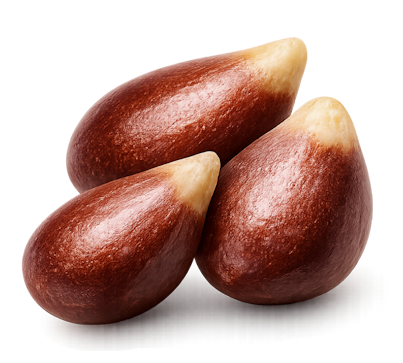

App desenvolvido especialmente para gestação gemelar: idade gestacional compartilhada, corionicidade, acompanhamento individual dos dois bebês (com discordância de crescimento) e cronograma de exames adaptado, além de período fértil e acompanhamento pré-natal.
⚠️ Os resultados são informativos. Confirme sempre com seu obstetra.